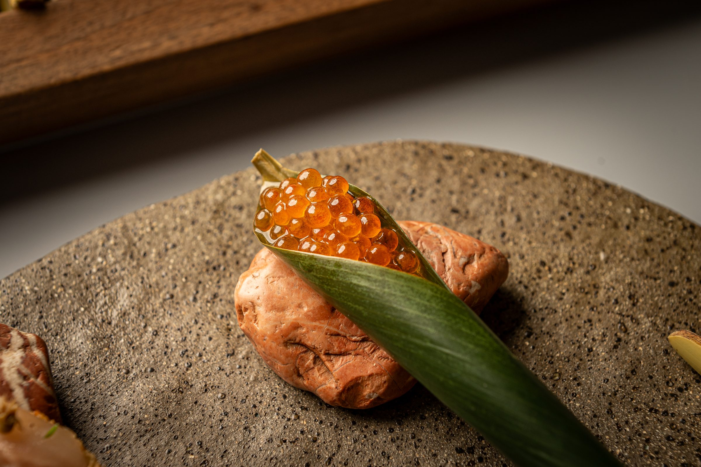

00 — CUADERNO DOS
Hoy lugares, historias y personas que merecen ser contadas (y recordadas).
En este nuevo Cuaderno nuestra inspiración parte de nuestra tradición más arraigada, de nuestro entorno más cercano y de nuestras historias más personales.
Un libro llamado "Las 1000 recetas de la cocina de Albacete" escrito en 1971 por Carmina Useros, ha compuesto este menú, donde todo el conjunto de platos y elaboraciones nacen de estas recetas rescatadas de nuestro antiguo recetario local. Aquí nuestro agradecimiento querida Carmina.
Nuestra carta cambia constantemente y combina técnicas de fermentación propias con productores locales de temporada, en línea con los sabores de nuestra cocina.
Escríbenos a hola@oba-restaurante.com para recibir la carta más reciente.
Nuestra barra está disponible para cenas privadas, ofreciendo el uso exclusivo del espacio por una noche. Solicitamos un mínimo de dos meses de antelación para asegurar la fecha.